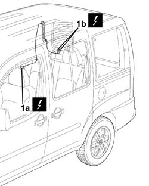

5505B41 wiring built into load compartment right rear door flap r r with interfering parts removed
- Path
- Procedures > 55 ELECTRICAL EQUIPMENT > 5505 ELECTRICAL CIRCUIT FOR INSTRUMENTS/INDICATORS > 5505B door,boot and bonnet wiring. > 5505B41 wiring built into load compartment right rear door flap r r with interfering parts removed
- Kind
- repair procedure (removal / refitting; the operation number is the code)
- Applies to
- all engines; all production periods
- Interactive page
- https://sloeber94.github.io/elrnDB-fDbl/en/#/2584886
Applies to: all engines; all production periods
 Removing
Removing
 Refitting
Refitting1. Disconnect the electrical connectors (1a) and (1b).
Name | Connector | |
|---|---|---|
1a | Tailgate rear seal/ |
Name | Connector | |
|---|---|---|
1b | Right heated rear windscreen |

Applies to: all engines; all production periods
Release the electrical wiring from the retaining springs.
Release the electrical wiring from the back.
Applies to: all engines; all production periods
Refitting
RemovingCheck that the wiring is not damaged.
If necessary, check the continuity.
Connect each individual electrical connector to the sensor used previously in order to facilitate the routing of the section of wiring removed in its original position.
Pull the end of the sensor and restore the routing of the electrical wiring.
Carry out the same operation for all the electrical connectors.
Position the electrical wiring, securing it using new retaining bands.
Disconnect each individual connector from the sensor.
Connect the electrical connectors:
 | Name | Connector |
|---|---|---|
1a | Tailgate rear seal/ |
| Name | Connector |
|---|---|---|
1b | Right heated rear windscreen |